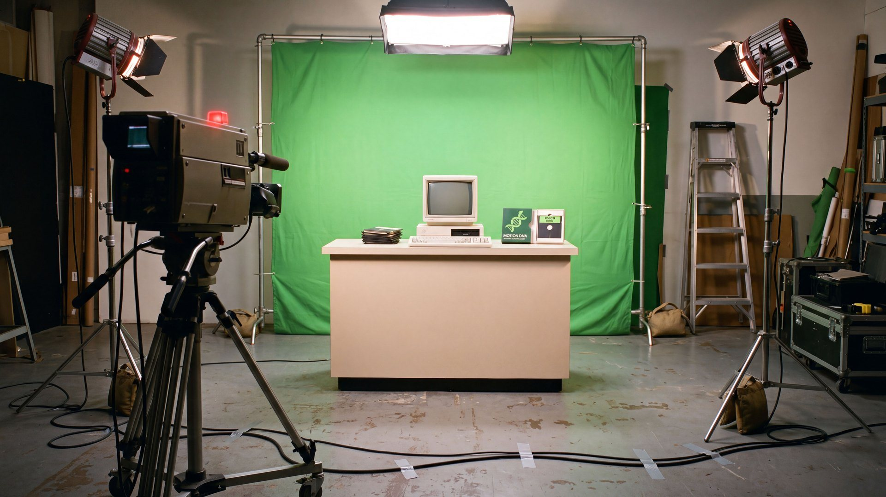
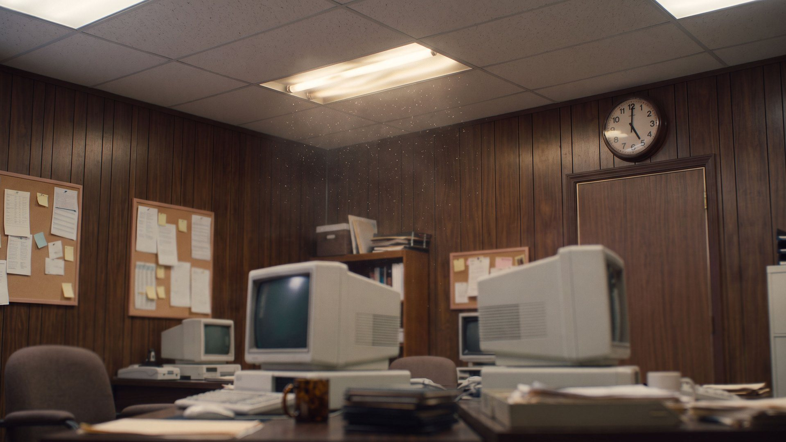
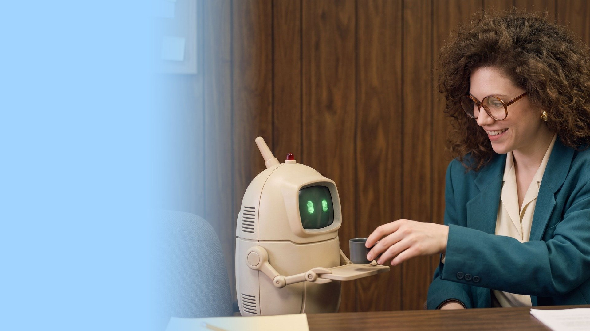

The Library
Motion DNA
Everything Motion DNA can do, each with an example that plays and the words to ask for it.
↓ Scroll or use the arrow keys
Index
What’s inside

01 · Library
The library
Moves · Text · Curves · Styles · Kit
01 · Moves
Moves that feel made
60 moves and loops on the brand curves, as native keyframes.
02 · Text
Words that arrive
21 ways to bring words in: by character, word or line, typed, decoded, counted.
03 · Curves
Curves you can feel
30 curves: the library's 14, and the springs and named eases of react-spring and anime.js.
04 · Styles
One click, a whole feel
9 styles. Each gives every layer of a comp its role and its move, on its own curve.
05 · Kit
The pieces Claude builds
149 pieces Claude builds in your comp: transitions, elements, shapes, looks, backgrounds, behaviours.
02 · Create
Make something new
Effects & 3D · Carousels · Characters · Made in code · Sound
06 · Effects & 3D
Code engines, as layers
85 effects from open-source engines, rendered on your machine into After Effects as layers.
07 · Carousels
Carousels for social
11 carousel styles for a social post (4:5), from the most used ones: coverflow, cube, stack, panorama.
08 · Characters
Characters that talk
A pixel character from one file: drawn in Figma, built in After Effects, lipsynced to any voice line.
09 · Made in code
Whole videos, written
21 whole videos written as code, rendered to MP4 or rebuilt in After Effects.
10 · Sound
Every move sounds
15 sounds made in code, ours to ship: the agent gives every move its sound. Click to listen.
03 · Workflows
Whole workflows
Techniques · Apps & panel
11 · Techniques
Techniques, start to finish
10 multi-step workflows the agent runs for you, start to finish.
12 · Apps & panel
Figma, the agent, your brand
17 things the panel and the agent do with Figma, your brands and your projects.

04 · Ask
Just ask for it
Prompts · Glossary · Use it
13 · Prompts
What people ask
33 orders people use most, each with what it calls in the library.
14 · Glossary
Words that move better
36 motion words. Use them in a prompt and the agent knows exactly what you mean.
15 · Use it
Three ways to ask
Ask in the panel, in the agent's chat, or from Claude Code. The same library answers.
- 1In the panelPick a move, a style or a curve and Apply it to the selected layers.Pick a move, a style or a curve and Apply it to the selected layers.Behaviors
- 2In the agent’s chat“Make the whole comp feel playful and add a sound to every click.”“Make the whole comp feel playful and add a sound to every click.”Agent
- 3From Claude CodeEvery card here has its order: copy it and paste it into Claude.Every card here has its order: copy it and paste it into Claude.MCP
Make it move.
This page lives in your Motion DNA folder: library/guide.html.